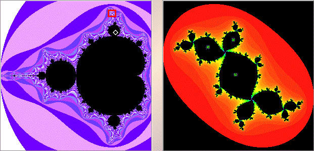

|  |
| In the right window move the pointer so the x and y coordinates (in the small right window below the Julia set window) are close to 0. |
| Shift-click or right click at that point. |
| The orbit of the selected point is displayed. |
| Here we see a 3-cycle. |
| Exercise Open the Mandelbrot and Julia Set software. Move the pointer to other regions of the Julia set and shift-click or right click. Can you predict which regions the orbit will visit? |
| Click the small red box in the left window to magnify that box. |
Return to Samples.